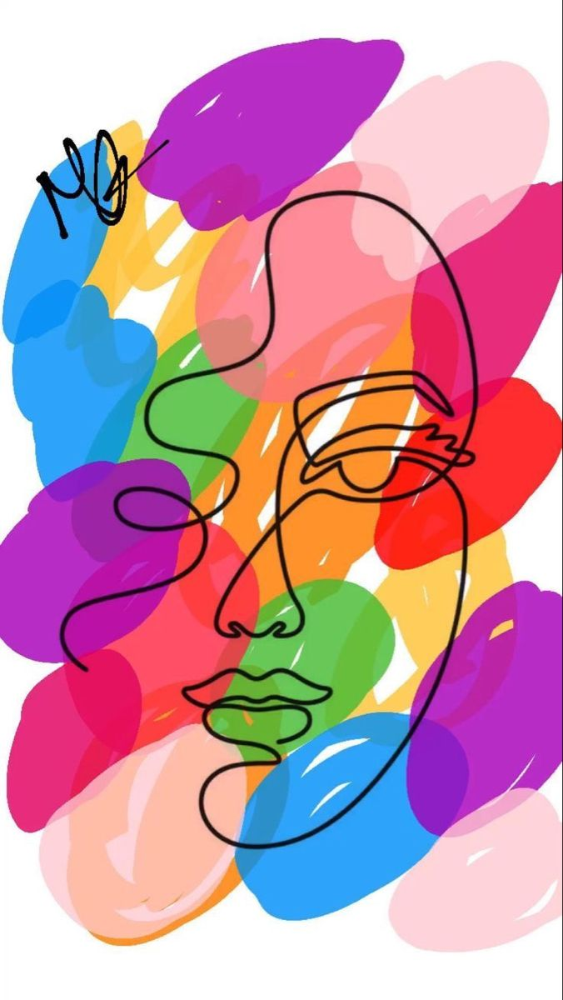
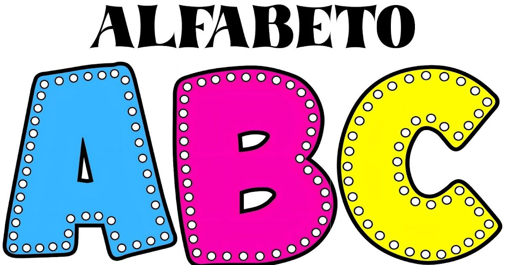
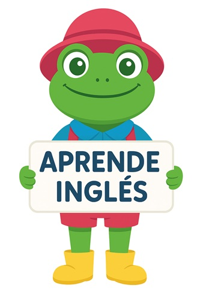

Modales
Aprende palabras amables como “please” y “thank you”.

Colores
Descubre los nombres de los colores en inglés.
Vocabulario
Aprende palabras básicas con imágenes y señas.

Números
Cuenta del uno al diez con inglés y señas.

Abecedario
Conoce las letras y su seña en inglés.

Lenguaje de Señas
Aprende a comunicarte con las manos 🤲
